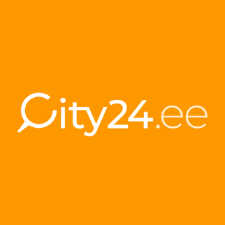
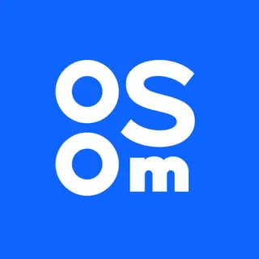

Nordea bank - a leading Nordic universal bank
- Project: Nordea - private online-banking solution for Estonia, Latvia and Lithuania.
- Activities: Implemented exporting card invoices to different formats, developed
presentation
layer features and integrations with banking back-end.
- Tech stack: Java 1.6, Struts framework, Weblogic, Tuxedo, JPA, JSP, SVN
Show project info

City24.ee -real estate portal.
- Project: City24.ee real estate portal. Largest Estonian platform for placing real estate
ads.
- Activities: Supporting legacy system as well as taking part in migration and developing
back-end
for new version of the system.
Implemented tools for migrating postal addresses for nationwide administrative reform. Took part
in migration of the system to Euro.
Was responsible for data-transfer part of the portal and developed integrations with different
real estate ads data providers.
- Tech stack: Java 1.7, Apache Wicket, Hibernate, Spring, Spring Integration, PostgreSQL,
Bare-metal servers, running servlet containers, SVN
Show project info

OSOM.finance - one wallet for all.
- Project: OSOM.finance - a project aiming at connecting crypto and fiat worlds, and
provide people
with
easy-to-use and robust wealth management platform.
- Activities: Joined the development team starting with the early phases of development and
continued
to
take part in development process until certain level of product maturity.
Was involved in different stages during system development: planning, implementing, testing,
supporting and bug-fixing different system modules.
Helped to onboard new team members and participated in hiring process.
Created documentation for most part of the system, including integrations with different service
providers.
- Tech stack: Java 11, Spring Boot and some Node.js + TypeScript on the back-end, Vue.js +
TypeScript
on the front-end, PostgreSQL and MySQL as databases, Redis as cache, Git for version control.
Microservice architecture, Docker and continuous deployment via GitLab CI/CD to Google
Kubernetes
Engine.
Show project info
Moss. Spend smarter.
-
Project: Moss spend smarter - spend management platform. A platform helping
businesses
to control and manage their spend, helping automate accounting
- Activities: As a member or accounting integrations team, I was responsible for
implementing
integrations with ERP's and accounting systems, such as QuickBooks and Oracle Fusion.
Being a product engineer this involved full cycle of development staring from collecting the
requirements, implementing solution, testing, deploying it to production, monitoring,
onboarding customers and working closely with accounting experts, csm, product owners and
other
cross-functional teams.
- Tech stack: Java 17, Spock, Spring Boot on the back-end, React + JavaScript /
TypeScript
on
the front-end, PostgreSQL databases, Redis as cache, Git for version control.
Microservice architecture, Docker and continuous deployment via GitHub actions, CI/CD, GKE,
Datadog.
Engine.
Show project info